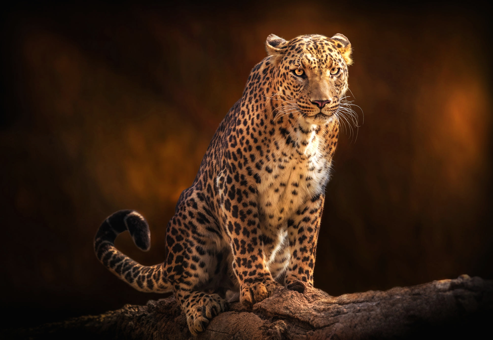
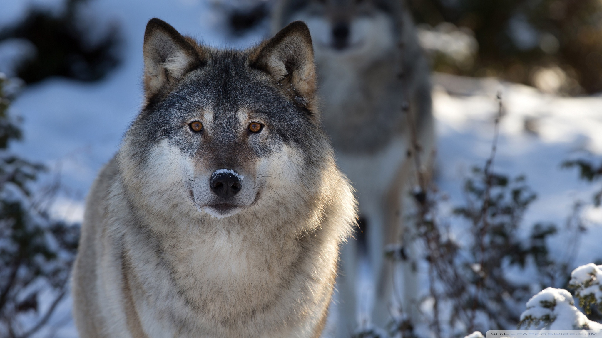

ХАЙУАНЫ
Леопард (Panthera pardus) — вид хищных млекопитающих семейства кошачьих, один из пяти представителей рода пантера (лат. Panthera), относящегося к подсемейству больших кошек. В XX веке был внесён в Красную книгу МСОП, в Красную книгу России, а также в охранные документы других стран. Однако во многих странах Африки относительно высокая численность леопардов позволяет выделять ежегодно квоту на их добычу.
Малая панда, или кошачий медведь, или красная (рыжая) панда — млекопитающее семейство пандовых, подотряда псообразных, отряда хищных. Она питается преимущественно растительностью и по размеру примерно соответствует крупным особям домашней кошки.
Волк (Canis lupus) — вид хищных млекопитающих из семейства псовых. Наряду с койотом (Canis latrans), обыкновенным шакалом (Canis aureus) и ещё несколькими видами составляет род волков (Canis). Волк — одно из самых крупных современных животных в своём семействе: длина его тела (без учёта хвоста) может достигать 160 см, длина хвоста — до 52 см, высота в холке — до 90 см; масса тела может достигать 90–110 кг. Когда-то волк имел гораздо большее распространение в Евразии и Северной Америке. В настоящее время его ареал и общая численность животных заметно уменьшились, главным образом в результате человеческой деятельности. Во многих регионах мира волк находится на грани полного исчезновения, хотя на севере Евразии и Америки его популяция всё ещё остаётся стабильной
